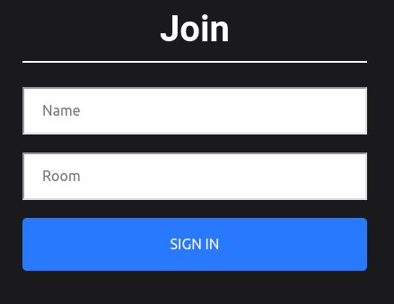

Chat Network
A Multi-Room Chat App.
Design Insights
- This simplistic app works as follows: Users are first greeted with a join screen , requesting a particular chat room the name they want to be represented by in the chat room. Messages can then be sent, with real time replies and from other users. Upon refresh , the entire chat box clears.
- Upon joining, they are greeted with a welcome message by a default admin user , and all other users in that particular chat room is made aware of their presence via a broadcast message.
- Messages can then be sent, with real time replies from other users. Upon refresh , the entire chat box clears. To use the app, please click the image or button below:
Technical Summary
- This app was created using react js for the front end , node and express js for the backend. Details for names and rooms are passed using query parameters as opposed to traditionally using props.
- React scroll to bottom library used here to allow the last sent chat bubble to always be visible. React Emojify (library) is also made use of here to convert typed symbols to emojis in the input container.
- Socket.io was used on the backend and socket.io-client on the front end . On triggering of certain events the socket connections were made to broadcast a message to all users / emit to all users minus the sender . Please visit the app to use it .